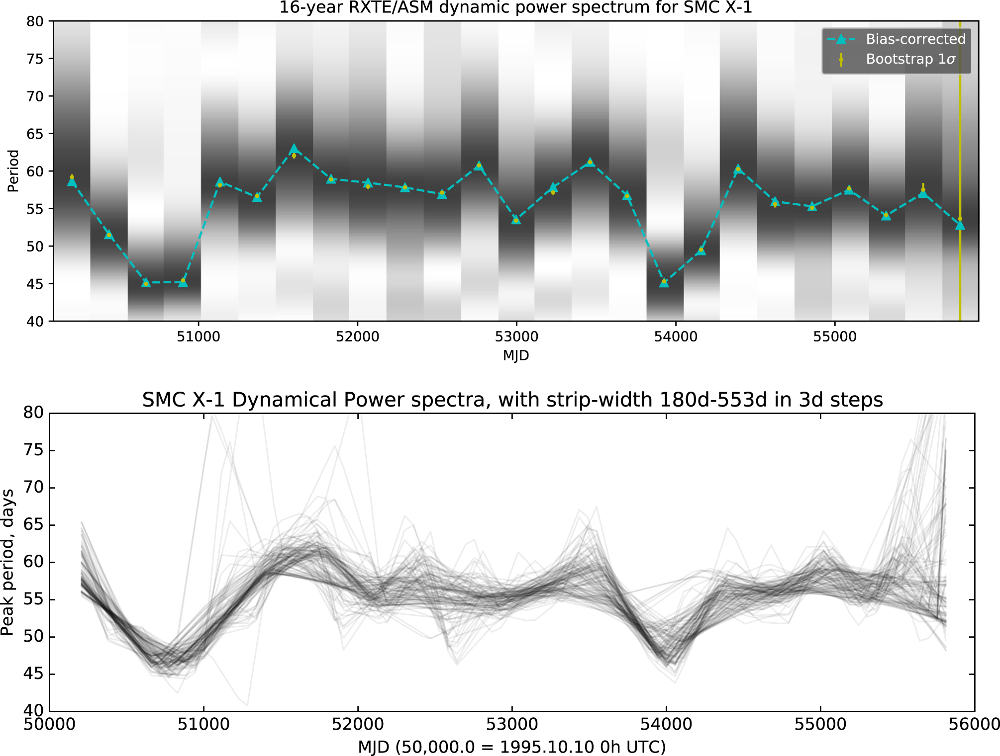

RZ2109
RZ2109 is a black hole candidate located in a globular cluster near NGC 4472. It is an ultraluminous X-ray source, meaning that its X-ray luminosity greatly exceeds the Eddington limit for a ten solar mass black hole. We have analyzed new and archival data in both optical and x-ray, going back to the year 2000. Previous work indicates it is likely to be an ultra compact x-ray binary; the presence of the completely forbidden [OIII] transition line in the optical points towards the binary companion being a white dwarf. Long-term optical and X-ray monitoring of this unique object will help shed light on the nature of the source. The combination of the strong [OIII] line and the strongly variable, as well as the X-ray brightness make RZ2109 very different from other known globular cluster X-ray sources. See these papers for X-ray studies and optical studies.
Globular Cluster Ultra-Luminous X-ray Sources
Prior to my thesis work, only a handful of globular cluster ULXs had been studied in any detail, but this changed with my 2019 study which compared the X-ray properties of the nine known sources. My subsequent studies of M87 and NGC 1316 have already doubled the known number of globular cluster ULXs. By increasing these numbers, I am now able to use properties of the sources to carry out pilot population studies of globular clusters that host black holes. See these papers on X-ray studies of globular cluster ULXs in NGC 4472, NGC 4649 and NGC 1399 and M87 .
SMC X-1
My previous study looked for a link between the change in the super-orbital period (thought to be due to a warped, precessing accretion disk) and the change in the pulse period of the high mass X-ray binary SMC X-1. While the data showed a tentative link between these two observational phenomena, the data at the time was not sufficient to prove a correlation in a statistically compelling manner. However, in 2021, I led a sucessful proposal to monitor the source with NICER, and to use this data to thoroughly probe the physics of the accretion disk as the super-orbital period changes. For the full analysis, see my 2019 paper on SMC X-1.
